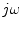

AC Analysis
The AC analysis is a small signal analysis in the frequency domain.
Basically this type of simulation uses the same algorithms as the DC
analysis (section 3.1 on page ![[*]](crossref.png) ). The AC
analysis is a linear modified nodal analysis. Thus no iterative
process is necessary. With the Y-matrix of the components, i.e. now a
complex matrix, and the appropriate extensions it is necessary to
solve the equation system (4.1) similar to the (linear) DC
analysis.
). The AC
analysis is a linear modified nodal analysis. Thus no iterative
process is necessary. With the Y-matrix of the components, i.e. now a
complex matrix, and the appropriate extensions it is necessary to
solve the equation system (4.1) similar to the (linear) DC
analysis.
Non-linear components have to be linearized at the DC bias point.
That is, before an AC simulation with non-linear components can
be performed, a DC simulation must be completed successfully.
Then, the MNA stamp of the non-linear components equals their
entries of the Jacobian matrix, which was already computed
during the DC simulation. In addition to this real-valued elements,
a further stamp has to be applied: The Jacobian matrix of the
non-linear charges multiplied by  (see also section
10.7).
This document was generated by Stefan Jahn on 2007-12-30 using latex2html.